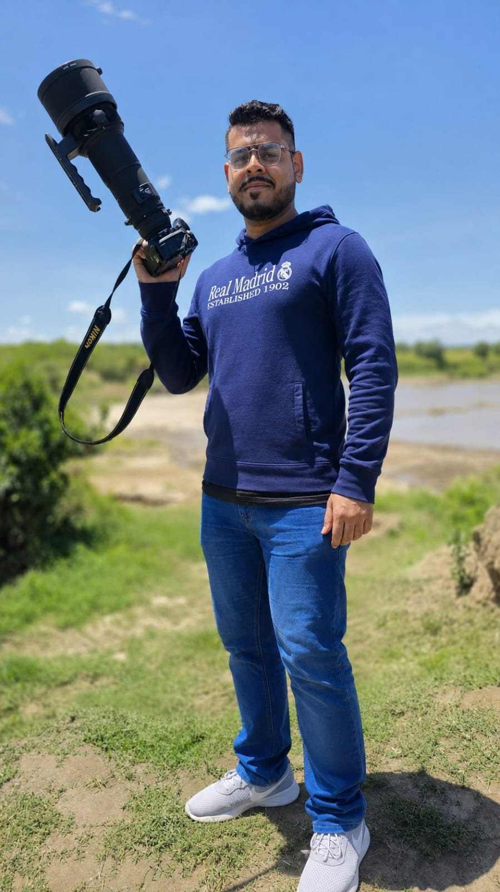

Your trusted partner for exclusive, tailor-made safari experiences in Kenya.
Based in the heart of Kenya, Wild Skies Safaris is a premier tour operator specializing in high-end, custom safaris. We move beyond the ordinary, crafting private journeys that take you into the heart of Kenya's most exclusive destinations.
To provide unforgettable, seamless and luxurious travel experiences while promoting sustainable tourism that benefits local communities and preserves Kenya's wildlife heritage.
We believe that every safari should be a personal story, tailored to the interests and desires of our guests. From the moment you contact us to the end of your journey, we ensure that every detail is meticulously planned and executed.
Jaffer Harunany - Founder & Safari Specialist
With deep expertise across Kenyan aviation, coastal tourism and safari logistics, Jaffer leads each journey with a rare mix of operational precision and personal care. His philosophy is simple: we do not just book rooms and flights; we engineer unforgettable African moments from the air to the ground.
Our local relationships with bush pilots, camp managers and expert guides ensure authentic, hassle-free guest care from the moment you arrive in Kenya.
We design journeys around you. Every itinerary is a unique conversation, tailored to your interests and desires for an exclusive adventure.
Our guides are Kenya's finest naturalists and storytellers, offering deep insights and unparalleled access to the wild.
From our luxury 4x4 Land Cruisers to hand-picked lodges and seamless logistics, we ensure every detail of your journey is flawless.
